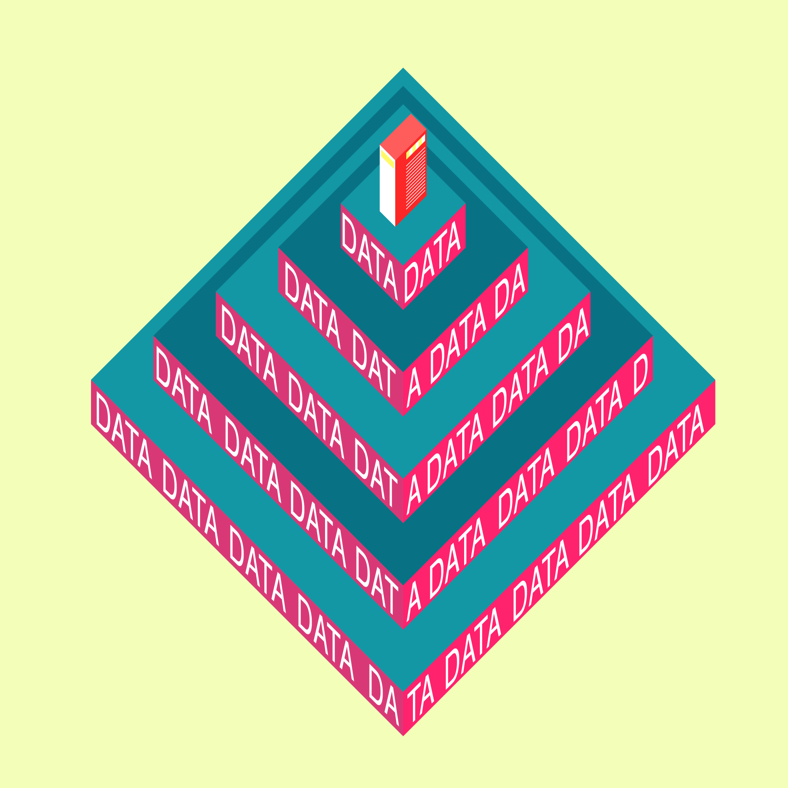

We believe that information you generate using digital products should be bringing you money, and be available for anyone to buy.
With the
we are transitioning to the ,
where .
In the eighteenth century, a series of inventions transformed the manufacture of cotton in England and gave rise to a new mode of production – the factory system, marking the early signs of the .
During these years, other branches of industry effected comparable advances, and all these together, mutually reinforcing one another, made possible further gains on an ever-widening front. The abundance and variety of these innovations almost defy compilation, but they may be subsumed under three principles: the substitution of machines – rapid, regular, precise, tireless – for human skill and effort; the substitution of inanimate for animate sources of power, in particular, the introduction of engines for converting heat into work, thereby opening to man a new and almost unlimited supply of energy; the use of new and far more abundant raw materials, in particular, the substitution of mineral for vegetable or animal substances. These improvements constitute the Industrial Revolution.
From the very moment machines could handle any sort of repetitive task, people have worried about human labor being substituted by machines. For example, as early as 1772 the British writer Thomas Mortimer criticised heavily the use of sawmills in manufacturing of cotton, which “if introduced into our dockyards would exclude the labor of thousands of useful workmen.”
The fear of devaluation of human labor soon ,
and it wasn’t long before it became a domain of writers working in the realm of speculation. Question was raised - “if machines can duplicate and even replace human muscle, could they do the same with the human brain?”, giving rise to the genre of science fiction.
The factory lord has become a penal legislator within his own establishment, inflicting fines at will, frequently for his own aggrandisement. The feudal baron in his dealings with his serfs was bound by traditions and subject to certain definite rules; the factory lord is subject to no controlling agency of any kind.
Even though multiple technological advancements of
and
often appeared to take jobs away, in the long run they led to the creation of new jobs, and have never created a serious obstacle for those who wanted to work, and all was well. The invention of, say, the internal-combustion engine put buggy-whip makers and carriage assemblers out of business, but it created many more jobs in the manufacturing and maintenance of automobiles, similarly as carriage drivers were simply replaced by truck drivers. In other words, as society progressed, the nature of labor has simply changed from manual to mechanized to computer automated labor. So how is it different this time?
The Second Industrial Revolution was another great leap forward in technology and society. New innovations in steel production, petroleum and electricity led to the introduction of public automobiles and airplanes.
The Third Industrial Revolution, also known as Digital Revolution began in 1970 with wide adoption of digital computers and used electronics and information technology to automate production. Central to this revolution is the mass production and widespread use of digital logic circuits, and its derived technologies, including the computer, digital cellular phone, and the Internet.
Currently, artificial intelligence algorithms have been developed such that machines can exceed human intelligence for completing specific tasks efficiently – ranging from automatic language translation to self driven cars . Considering the pace and the trajectory of development of the artificial intelligence framework, in the future, technologies will be capable of doing everything that human beings are employed for presently, while utilising vastly less human labour.
We have entered an economy in which knowledge and information is the primary raw material and source of value. It is being enabled by convergence of communication and data processing technologies into information technology (IT). Information economy is characterised by pervasive influence of IT on economic activity and every aspect of cultural, political, and social life which is based on the production and distribution of information. In such economy the most workers are information workers and most products are information products. In a longer run that naturally divides society into new classes: those who are information-rich and those who are information-poor.
As we’ve seen throughout the history, technological progress and automation of human labor simply changed the nature of work and oftentimes created more new jobs. However, since the future is a place of accelerating changes, it would be unwise trying to predict it by only looking at the past. In other words, if new jobs simply appeared in the past, it doesn’t mean they always will, at least in traditional sense of the notion.
World Economic Forum report on Future of Jobs stimates the creation of 2 million new jobs alongside the elimination of 7 million by 2020, which means a net loss of 5 million jobs. Another frequently cited study by Oxford Martin Schoolestimates the automation of about half of the jobs existing today by 2033. Lastly, now even the White House in its report to the Congress , estimates 83 percent chances of eventually losing job to a machine for a worker making $20 an hour or less. Even highly paid workers earning as much as $40 an hour face chances of 31 percent. This all is being achieved thanks to machine learning, or artificial intelligence, that has an impact on any industry in any country: from automatic language translation to self driving vehicles to optimization of processes in production, marketing and advertising. In other words, machine learning has the capability of drastically impacting all economies — by eliminating millions of jobs within a short span of time.
When it comes to information, we are creating increasingly more of it every day. Thanks to digitization of our daily activities and further proliferation of Internet, in 2015 alone we are liking 4.2 million things on Facebook, uploading 300 hours of videos on YouTube and creating 350,000 tweets every single minute , the amount of data we are creating is doubling every 1.5 years . According to 2013 report by SINTEF, 90% of all information in the world has been created in the prior two years . Everything we do is generating data like never before, and lots of data is exactly what machines need in order to learn.
Imagine programming a computer to recognize a table. You would need to write a lot of instructions and complex algorithms, and still you would have a program that would never do it as well as a human being. However, if instead of providing computer complex algorithms, you upload thousands of images of things that are similar to tables — it would do a much better job. This is called reinforcement learning, and is very similar to the process human beings use to learn. When we learn to recognize a table, the label “table” gets connected to every table we see, such that certain neural pathways are reinforced and others aren’t. For “table” to fire in our brains, what we see has to be close enough to our previous table encounters. This principle is clearly visible in the .
With the first developments of machine learning, or Artificial Intelligence, people have tried to create an algorithm that would translate between languages. Initially this sounded like a comparatively simple task: in 1960s Marvin Minsky, pioneer in the field of Artificial Intelligence, then professor at MIT AI Lab, tasked his students with developing such an algorithm as part of a summer project. This has proved to be unsuccessful, however. Creating an algorithm that would account for all the nuances and subtleties of human speech proved to be too difficult. It took AI enthusiasts 30 more years of trials before people at IBM found the working formula. The secret was simple: to use multiple examples of translations by real people as a material for teaching the machine. Today, all major automatic language translators work this way. Data with samples of millions of real translations is gathered across the internet, and is being fed to algorithms to perform translations online. This principle allows computer translators to remain up to date even despite natural evolution of human language and appearance of slang.
Currently, artificial intelligence algorithms are developed in that way in which machines can exceed human intelligence for completing specific tasks efficiently – ranging from automatic language translation to self driven cars. Considering the paceand the trajectory of development of the artificial intelligence framework, in the future, technologies will be capable of doing everything that human beings are employed for presently, while utilising vastly less human labour. In other words, more and more jobs in the future will be automated by algorithms and machines, but in order to function, those machines need information that is still produced by people.
Failing to recognize that — and claim ownership of our own data — leads to ,
You might have noticed it already. There is a strange logic at the heart of the modern tech industry. The goal of many new tech startups is not to produce products or services for which consumers are willing to pay. Instead, the goal is to create a digital platform or hub that will capture information from as many users as possible — to grab as many ‘eyeballs’ as you can. ,
for instance, is just one of numerous examples.
In 2014, then a 4-years-old WhatsApp, an application that provides users a simple interface enabling people to stay in touch with each other, was sold to Facebook for astonishing $22 billions. At the time of the purchase there were 55 employees at WhatsApp, which served 400 millions of people. That makes this acquisition the largest transaction done by any two companies backed by venture capitalists.
Shoshana Zuboff, the famous Harvard business theorist, calls this phenomenon surveillance capitalism . She believes that it has its own logic, distinct from other forms of capitalism, that needs to be carefully and critically assessed. She is not alone in raising concerns over the ever-growing influence tech companies are gaining due to the unrestricted and exclusive access to the information. So how does it really work?
It starts with providing, usually free, services for people and collecting as much information as possible in the process of usage. There seems to be an insatiable appetite for capture of ever-increasing volumes of information from ever-expanding array of sources. Since users have little awareness and control about information being collected, it is becoming relatively easy and cheap to do so, and tech companies rarely discriminate against which information is valuable and which is not. Everything goes: our social preferences, buying history, likes, activity logs and many more. Tons of information is being pumped into the ever-growing servers every second.
Once information is captured, it can then be analyzed and monetized as it allows to understand people’s behaviors. This feature makes data the main ingredient in .
Today, advertising constitutes 20-60% of product price. That means the more effective advertising is, the cheaper the product becomes, which makes it more attractive against the market competition. In other words, in order to remain competitive, companies are striving to increase effectiveness of advertising by showing targeted messages only to people who are already interested in buying certain products, and therefore eliminate wastage associated with traditional advertising approach — where large and non-specific groups of people are exposed to an ad content. This approach — called targeted advertisement — is enabled by large amounts of data collected from people. The data allows to analyze past behavior of users and predict future behaviors and needs.
The old logic where advertisers purchase space or time in media with hope to get user’s attention is quickly becoming obsolete. Instead of addressing rather general audience thought key media channels, they can now skip media altogether, tailor message to a specific person, and locate them anywhere online (and increasingly in physical space) due to ubiquitous surveillance. This results in a much more efficient advertising. And since marketing and advertising are naturally moving towards greater efficiency, companies that have access to the largest amounts of data naturally become the most powerful players in the advertising market (Google and Facebook have monopoly on search queries and social graphs respectively). The above mentioned duo, combined, receives over 70% of all the dollars spent on online advertising in the US.
On the user’s side, the collected information allows to personalize and improve free services provided, thus attracting even more loyal users, allowing to collect even more precise information and make the system more attractive to marketers and advertisers. This creates a self-reinforcing loop, which becomes hard to escape. As omnipresent technologies become the new social norm, people rarely are willing to make a sacrifice for privacy or ethical concerns. It makes for an interesting phenomenon in which tech companies are becoming the wealthiest charities out there: users are giving away the very resource that makes them so powerful for free.

As a result, Google and Facebook quickly became monopolies in their respective fields, representing about 70% of online advertising market share. Companies that had not existed before 2003, now became unquestionable part of any marketing strategy. The recipe is working so well, however, that surveillance capitalism companies are entering the real world in order to collect more information about their users. While collecting data online allows for serving targeted ads, information collected from the connected objects and wearables allows to understand, anticipate human behavior in real time and .
This phenomenon called “reality mining” is at heart of most surveillance capitalism projects and is the basis for the perfect form of advertising — where people’s behavior is simply subconsciously shaped to profit companies in question, without having to advertise anything.
Let’s use a couple of real life examples of technologies that are already in place or are under development. Auto insurance industry, for example, is one of those that has been notoriously exploitative toward customers and has had obvious reasons to be anxious about the implications of self-driving cars for its business model. As Shoshanna Zuboff famously put it in her article: ”Now, that data about where we are, where we’re going, how we’re feeling, what we’re saying, the details of our driving, and the conditions of our vehicle are turning into beacons of revenue that illuminate a new commercial prospect. According to the industry literature, these data can be used for dynamic real-time driver behavior modification triggering punishments (real-time rate hikes, financial penalties, curfews, engine lock-downs) or rewards (rate discounts, coupons, gold stars to redeem for future benefits).”
This is just one example, in one corner, of one industry, and the examples are multiplying day by day. Among the many interviews Shoshanna have conducted over the past three years, the Chief Data Scientist of a much-admired Silicon Valley startup that develops products to improve students’ learning told, “The goal of everything we do is to change people’s actual behavior at scale. When people use our app, we can capture their behaviors, identify good and bad behaviors, and develop ways to reward the good and punish the bad. We can test how actionable our cues are for them and how profitable for us”.
The whole paradigm of a functional, effective, affordable product as a basis for economic exchange is becoming thing of the past. The sports apparel company Under Armour is reinventing its products as wearable devices. The CEO wants to be like Google. He says, "If it all sounds eerily like those ads that, because of your browsing history, follow you around the Internet, that's exactly the point – except Under Armour is tracking real behavior and the data is more specific… making people better athletes makes them need more of our gear.” The examples of this new logic are countless, from smart vodka bottles to Internet-enabled rectal thermometers and quite literally everything in between. A Goldman Sachs reportcalls it a “gold rush,” a race to “vast amounts of data.”
If we take a step back and think, almost every aspect of our lives is now shaped by technology. The places we go for a dinner after checking reviews online, the algorithmically selected music to fit our taste, the places we stay at during our travels, the cars we drive, the routes we drive through, people we date – the list goes on and on. The game is no longer about sending you a mail order catalogue or even targeted online advertising. The game is selling access to the real-time flow of your daily life – your reality – in order to directly influence and modify your behavior for profit. This is the gateway to a new universe of monetization opportunities: restaurants who want to be your destination. Service vendors who want to fix your bike wheels. Shops who will lure you by targeted offers. Essentially everyone who wants a piece of your behavior for profit. Small wonder, then, that Google recently announcedthat its maps will not only provide the route you search but will also suggest a destination.
which, when coupled with ,
results in:
In parallel with the development of physical networks and the current tendency to connect everything and everybody to each other, there is an extremely fast development of technologies that connect us to the network. As the
 shows, we are steadily moving to more immersive and natural interfaces. From people having to 'speak computer language' in early days of digital computing, we are now transitioning towards new paradigm, where computer interfaces are designed in the way most natural for human brain to comprehend. Naturally blending with the three dimensional environment around us, as opposed to being confined by a screen. This transition is being enabled by rapid development of series of technologies such as ubiquitous, distributed sensors, smart, connected materials, holographic projections as well as Virtual Reality (VR) and Augmented Reality (AR). Expected to become mainstream and disrupt mobile by 2020, it has already attracted major investments from every leading tech company, and has been named the next major computing platform by people like Mark Zuckerberg.
shows, we are steadily moving to more immersive and natural interfaces. From people having to 'speak computer language' in early days of digital computing, we are now transitioning towards new paradigm, where computer interfaces are designed in the way most natural for human brain to comprehend. Naturally blending with the three dimensional environment around us, as opposed to being confined by a screen. This transition is being enabled by rapid development of series of technologies such as ubiquitous, distributed sensors, smart, connected materials, holographic projections as well as Virtual Reality (VR) and Augmented Reality (AR). Expected to become mainstream and disrupt mobile by 2020, it has already attracted major investments from every leading tech company, and has been named the next major computing platform by people like Mark Zuckerberg.
Let’s try to build a quick timeline to better understand the direction of this evolution. From the simplest binary data writing the technology moved on to microchips before it evolved into batch interfaces – non-interactive interfaces, where the user specifies all the details of the batch job in advance to batch processing, and receives the output when all the processing is done. The next great improvement was the command line interfaces (CLI), which is one of the most efficient tool even today. Commands are sent to the program in the form of successive lines of text.
The next step of User Interface evolution became graphical user interface (GUI), which was a much more convenient way to interact with computers. It provided a wide range of graphical elements, such as windows, menus, radio buttons, and checkboxes. In addition to keyboard, it allowed to use mouse as a controller. This is was an already great step forward, which opened a wide range of usage of personal computers.
In the 90s, with the invention and popularisation of the Internet, GUI became the main medium for communications in the web. Web-based user interfaces formed new group of interfaces that could accept input and provide output by generating web pages transmitted via the Internet and shown in a web browser.
With further development of screens and computing power of personal devices the new type of input gained popularity - touch screens. From the user’s perspective they almost removed the interface part as a middleman between human and digital objects. Now we touch and manipulate digital abstractions almost as if they were real objects.
Gestures, voice, natural-language processing - modern devices can track and use as an input almost every way of communication available to human. This is why the next evolution of interfaces is expected to be even more contextual and less intrusive, virtually blending with the surrounding environment.
As we have seen, with every next step in the evolution, interfaces become more and more natural and non-intrusive. From bits to words to images and movies to immersive environments. In the context of generation and data capturing, however, there are two key points worth mentioning. First of all, with every leap in development of technology, the amount of information generated as byproduct of its activity increases exponentially. From point interaction and meta-data measured in bytes at the times of Command Line Interfaces to continuous flow of rich metadata captured while using devices, such as Microsoft HoloLense, for example, which is considered to be one of the pioneers of AR. Today, when all the communication flows are routinely tracked by digital infrastructure providers in order to serve you with personalized advertising, even simple digital traces - like search queries on the web - can sometimes say more about you than you know yourself. If your identity can now be identified by the mere trajectory of cursor movement, what potential there is in the device that continuously traces your eye movement and movement throughout space?
Secondly, and even more importantly, Augmented Reality devices – that add an additional digital layer to the perceptible world – hold (yet little explored) potential for influencing and modifying our behavior. By augmenting our reality with metadata, additional objects and context overlays, AR has almost the same level of immersiveness as the physical world. All the available tools for people who moderate our physical reality (architects, advertisers, city planners, interior designers) are also available for those who design this virtual overlay. That, in fact, provides almost the maximum level of efficiency in affecting our world perception and behavior.
1
It’s pretty easy. If only a few companies owned the precious data and metadata (as we have established, these are the foundation of the information economy), they would not only become the wealthiest and most powerful companies (e.g. Alphabet). Being the only ones able to access the raw material, they also become the only ones that can develop the possible usages of the data. One could compare it with a situation in which there are no public libraries, but all companies and institutions have their own secluded knowledge base – it would obviously limit the amount of people able to use the information and, thus, strongly hold the development back. Now we have a case in which few companies have accumulated the main bulk of information, so it is centralized and can be well analyzed. However, since the database is not open to everyone, it is only used for the purposes benefitting these companies. It makes it impossible for others to use the information in more creative ways and prevents a competitive market from emerging. Right now a handful of companies dictate what needs to be and what should be developed, how it is developed and who it benefits.
2
The access to a huge amount of data and metadata equals a tremendous power. The metadata tells about how users are behaving and interacting, and the more activity (social, work, experience, education, treatment) we move into the digital realm, the more meta-data is produced.
One of the main characteristics of the
of virtual copies of the physical world in order to make decisions that are then applied back to the physical world. Our behavior is certainly not an exception. It is also analyzed to be later targeted. But it doesn’t stop there. The digital models of our behaviour can also tell what to do in order to manipulate and re-shape our behavior in the way that would be beneficial for those who create the model. Hence the power of vast amount of metadata.
Fourth Industrial Revolution is building on the Third, the digital revolution that has been occurring since the middle of the last century. It is characterized by a fusion of technologies that is blurring the lines between the physical, digital, and biological spheres. The speed of current breakthroughs has no historical precedent. When compared with previous industrial revolutions, the Fourth is evolving at an exponential rather than a linear pace. Moreover, it is disrupting almost every industry in every country. And the breadth and depth of these changes herald the transformation of entire systems of production, management, and governance.
3
As we have established, within this increasingly automated world, there is an emerging logic of value production. Information is first being generated by people and is eventually collected and processed by machines where value is being generated (information still playing key role in supporting functionality of artificial intelligence or development of new products, for example). As this trend strengthens, we have more and more value being generated and accumulated at the later stages of production chain, leaving real producers with less opportunities to profit from their contribution.
In other words, if this intelligence is provided by the people for free, the raw material required to develop and run this artificial intelligent system won’t be part of the economy anymore. And, the more the information or the information providers are treated as a consequence and not the core value, the more the economy will shrink as this automated system continues to advance; resulting in a much larger macroeconomic problem.
Besides, not only will the economy shrink, it will also be concentrated around those who have the best computing power to process, analyse and benefit from the information gathered.
Let’s compare two companies to understand this phenomenon better. As Ian Leslie writes, “Kodak was founded in 1880, and at its peak employed nearly 145,300 people, including the ones employed indirectly via suppliers and retailers. The Eastmans, who founded Kodak, became wealthy while providing and even creating skilled jobs for several generations of middle-class Americans. Instagram was founded in 2010 as a free service and soon enough it disrupted Kodak, wiping out jobs for thousands of middle class workers. In 2012, Facebook bought Instagram, a company less than two years old, for a billion dollars. Even more remarkably, at the time of the sale, Instagram had exactly 13 employees.”How could a billion-dollar company have only 13 employees? Was this because those employees were so extraordinarily valuable? No, it’s because much of its value came from the millions of users (now jobless) who contributed to the network without being paid for it. This is only a tiny snapshot of a concentrated wealth distribution eroding the middle class. If continued along this path, it only creates an unsustainable market economy.
In order to prevent that from happening, there needs to be a paradigm shift in the way we treat the very basic resource of the information economy — that keeps the system running — information itself.
We believe that in order to prevent further monopolization of information markets information has to be available for purchase to everyone who might be interested in using it. Instead of prohibiting and limiting collection and use of personal data, we take underlying market forces, and try to shape them into a more productive direction.
We propose an ecosystem that allows everyone interested in purchasing people’s generated data to do so directly without having to go through the third party; and for people, on other hand, to benefit from the data they produce while exercising control – what information they are willing to share, whom they share it with, and how much they get paid for it.
Trajectory of the development of human-to-computer interfaces suggests that the next generations of interfaces would be less present in our lives in forms of screens and apps, but distributed and blended with the surrounding context. Where digital applications, and contextual interactions merge with physical context in right place at right time , effectively rendering cities around us as self-sufficient interfaces.
Augmented & Virtual Reality technology is one of the tools that makes it possible. Expected to become mainstream and disrupt mobile by 2020 , we think it might become a tipping point for Project Data Coup. On one hand, Augmented Reality (AR) devices would generate almost continuous flow of increasingly-valuable meta-data about our lives, including interactions with objects and other people, body, eye movement and quite possibly even brain waves . This tendency, combined with possible influence AR might have on our behavior [external link] makes up for a dangerous precedent if entire ecosystem is controlled by few corporations. On other hand, AR technology in itself presents an opportunity to rethink certain paradigms of screen era, and can as well become a solution to a problem it is about to aggravate.
We envision an alternative ecosystem to the one we have now, where users give away their valuable data to privately-owned platform in exchange for free services; and interested companies pay the platform for the right to interact with users and advertise to them. Instead, we propose a scenario where users and the companies have an opportunity to connect directly, without having to go through a third-party entity. Approved companies get direct access to people’s generated data, and people are rightfully compensated.
In that scenario, device (a pair of glasses or contact lenses, once the technology permits) might become a critical medium, that would allow
a
to collect and sell users’ data to interested and approved parties, as well as
b
to provide a platform for interested parties to interact with user’s reality directly, by providing contextual augmented holograms, making the interaction more attractive than traditional advertising.

The new ecosystem connects various entities between each other through transparent decentralized network, and allows for automatic execution of predefined protocols. Powered by Blockchain protocol , it enables every single participant of the network to store encrypted information about every transaction that occurs on the network. Therefore, the network itself becomes a shared, trusted ledger that everyone can inspect, but not a single user can fully control.
The ecosystem consist of users and their devices, physical spaces, virtual environments, data servers and their maintenance crews, AI algorithm owners, and, lastly, entities that might be interested in purchasing the data and interacting with the users. Having a set of predefined protocols allows, for example, to upload and store user’s information on the server, regulate who can access it, transfer funds to user’s account once certain information has been used by a third party; all automatically, without having any central control board.
This allows to create the new type of marketplace where data and money flow between the participants automatically without being controlled by the central authority.
Protocols include, but are not limited to:
1. User shares their data by uploading to the cloud server
This is a deliberate and conscious choice. Recognizing the value of personal data, the user treats it as an asset that can be traded. He or she decides what data to share by adjusting personalization level and turning different clusters of data (like movement, eye tracking) on and off. The user decides who to share the data with by blocking undesirable parties from interaction with user’s data, or endorsing others. Finally, user is setting the price for own data, which creates healthy market conditions between all the stakeholders of the system. Value of data is determined based on its uniqueness, personalization level, user’s buying activity (data of more active consumers is more valuable for companies). Once the data has been uploaded to the server, any entity who is allowed to access it, can buy it.
This is a deliberate and conscious choice. Recognizing the value of personal data, the user treats it as an asset that can be traded. He or she decides what data to share by adjusting personalization level and turning different clusters of data (like movement, eye tracking) on and off. The user decides who to share the data with by blocking undesirable parties from interaction with user’s data, or endorsing others. Finally, user is setting the price for own data, which creates healthy market conditions between all the stakeholders of the system. Value of data is determined based on its uniqueness, personalization level, user’s buying activity (data of more active consumers is more valuable for companies). Once the data has been uploaded to the server, any entity who is allowed to access it, can buy it.
2. Company buys data from the server
Any third party with a permission can buy the data. When someone buys user’s data, automatic protocol is executed, transferring the determined amount of money directly to seller’s account.
Any third party with a permission can buy the data. When someone buys user’s data, automatic protocol is executed, transferring the determined amount of money directly to seller’s account.

3. Company buys data from the server
Once bought, data can be used for any purpose the buyer decides. It can be marketing research, or teaching AI algorithms by providing inputs of real people behavior, developing targeted products and offerings.
Once bought, data can be used for any purpose the buyer decides. It can be marketing research, or teaching AI algorithms by providing inputs of real people behavior, developing targeted products and offerings.
4. Company gets license to interact with the user by providing interactive content
When someone purchases user’s data, they automatically get a right to interact with the user by providing tailored content in forms of contextual holograms displayed through the AR headset, overlaid with surrounding context. That allows companies to transition from pointed interactions to continuous flow of opportunities to engage with the user; and opens up the whole host of new possibilities on the intersection of city and digital overlay. Physical spaces and virtual environments become a stage for deployment of highly personalized services: the right type of content, seamlessly blended with the surrounding world, is shown to the right people, in the right place, at the right time.
When someone purchases user’s data, they automatically get a right to interact with the user by providing tailored content in forms of contextual holograms displayed through the AR headset, overlaid with surrounding context. That allows companies to transition from pointed interactions to continuous flow of opportunities to engage with the user; and opens up the whole host of new possibilities on the intersection of city and digital overlay. Physical spaces and virtual environments become a stage for deployment of highly personalized services: the right type of content, seamlessly blended with the surrounding world, is shown to the right people, in the right place, at the right time.
5. Company pays owner of the (physical/virtual) space for the right to interact with the user
Since context (physical or virtual) becomes critical part in contextual interactions, companies are paying owners of spaces for the right to use the space. Since user’s attention span is always limited at a given point in time, if there is more than one entity willing to interact with the user, an automatic bidding process takes place, and the one who pays more gets access to user’s attention and reality.
Since context (physical or virtual) becomes critical part in contextual interactions, companies are paying owners of spaces for the right to use the space. Since user’s attention span is always limited at a given point in time, if there is more than one entity willing to interact with the user, an automatic bidding process takes place, and the one who pays more gets access to user’s attention and reality.
6. Company uses data for production enabled by third-party AI provider
Algorithms necessary for analysis and processing of data are owned by companies themselves or provided in form of service by larger Artificial Intelligence agencies to smaller companies.
Algorithms necessary for analysis and processing of data are owned by companies themselves or provided in form of service by larger Artificial Intelligence agencies to smaller companies.
7. Maintenance
Expenses required to maintain the servers, such as electricity, support staff etc. are automatically subtracted as a percentage of transactions, without accumulating in the central hub.
Expenses required to maintain the servers, such as electricity, support staff etc. are automatically subtracted as a percentage of transactions, without accumulating in the central hub.
First, demonopolization of data use and ownership, will weaken the positions of current information monopolists, reducing the risk of them abusing the influence they have on users; and unlock creativity and innovation allowing more people to find new and better uses for data. Instead of encouraging further distribution of free services provided by the monopolist, we are likely to see more competition and services sparkling economic activity and giving rise to paid services, which would propel the economy even further.
Second, by making data a tradable asset, production of it becomes a new nature of work. That means the emergence of new activities – such as society-wide data brokerage and trading, more conscious and deliberate use of information – and ultimately healthier distribution of wealth. Users would have an opportunity to be contributors and creators within the information economy.
Finally, the use of augmented reality in the physical context unlocks possibilities for companies to interact with people in a completely new way, that is much more powerful than traditional advertising. City becomes a crucial component in the game, marrying tech and urban aspects.
All the components that are necessary to build such a network are already in place today.
It might take a crowdfunding initiative to gather critical mass of supporters, and put the first bits in place. It requires, however, that people are aware of the possibilities and necessities of such initiatives. Therefore, please share this material, and subscribe to know more in the future, when we are taking further steps.